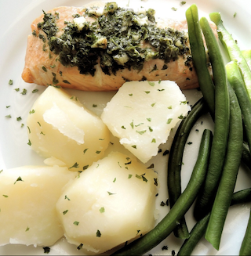

Ingredients
- 6 salmon fillets (about 6 oz each)
- 3 tablespoons Dijon mustard
- 1 cup panko breadcrumbs
- 1 tablespoon dried oregano
- 1 tablespoon dried thyme
- 1 tablespoon dried rosemary
- 1 teaspoon garlic powder
- 1 teaspoon salt
- 1/2 teaspoon black pepper
- 2 tablespoons olive oil
Preparation Directions
- Preheat the oven to 400°F (200°C).
- Combine panko breadcrumbs, oregano, thyme, rosemary, garlic powder, salt, pepper, and olive oil in a bowl.
- Brush the top of each salmon fillet with a thin layer of Dijon mustard.
- Press the breadcrumb mixture firmly onto the mustard-coated side of each fillet.
- Heat a skillet over medium-high heat.
- Place salmon skin-side down and sear for 2 minutes.
- Transfer the skillet to the preheated oven.
- Bake for 8–10 minutes, or until the crust is golden brown and the salmon is cooked through.
- Serve immediately and enjoy.

Nutrition Information (Per Serving)
| Nutrient | Amount |
|---|---|
| Calories | 390 |
| Carbohydrates | 12 g |
| Protein | 35 g |
| Fat | 21 g |
| Values are estimated and may vary depending on ingredient brands and portion sizes. | |
Major Macromolecules
- Protein: Salmon
- Lipids (Fats): Salmon and olive oil
- Carbohydrates: Panko breadcrumbs and Dijon mustard